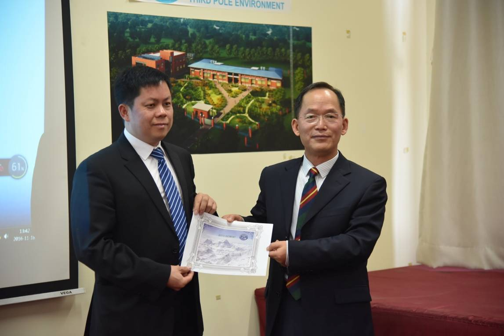
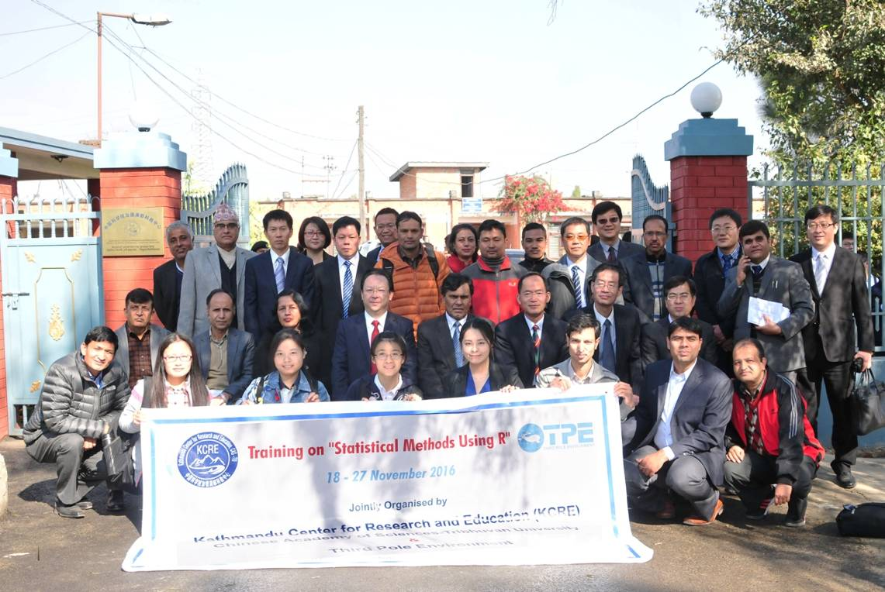
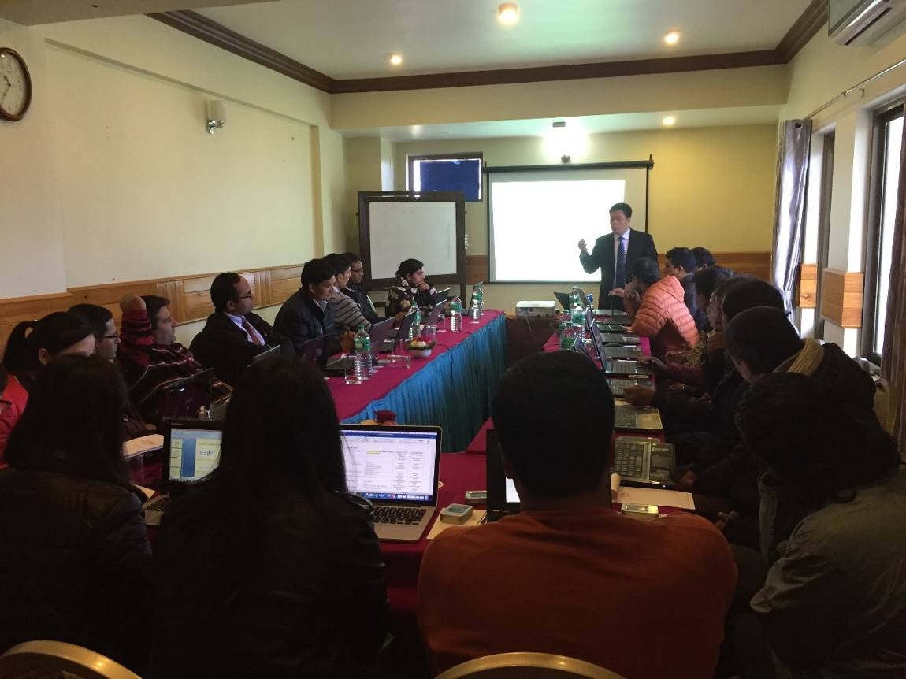
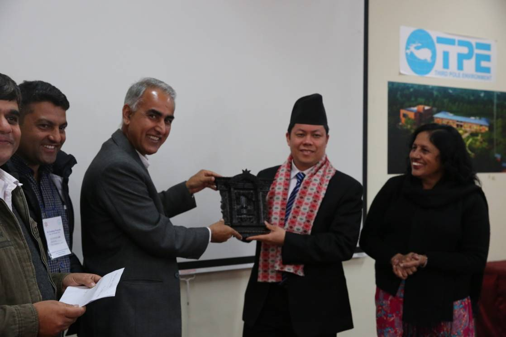
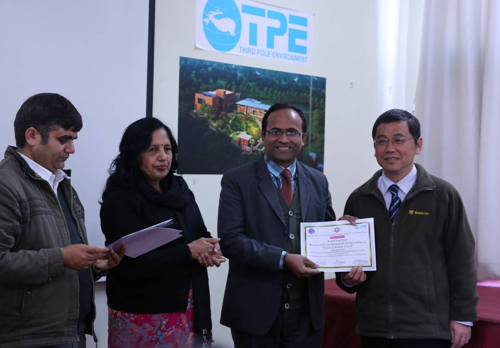
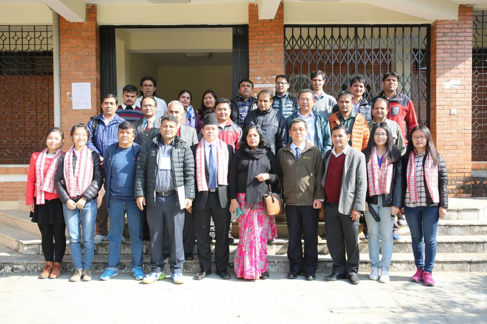

11月18日至27日，中国科学院加德满都科教中心（以下简称“中心”）在尼泊尔加德满都举办R语言培训班。中心邀请中国科学院植物研究所赖江山博士担任主讲教师，来自特里布文大学水文、经济、化学、环境、大气、统计和地球物理等专业的20多名学员参加了培训学习。学员中既有博士后和在读研究生，也有大学的资深教授，如特里布文大学前任副校长Chandra Mani Paudel教授等。
R语言是一个免费的自由软件，拥有UNIX、LINUX、MacOS和WINDOWS等版本，由新西兰奥克兰大学Robert Gentleman和Ross Ihaka等科研人员合作开发，集成数据处理、科学计算和制图功能为一体，具有强大的统计分析功能，广泛应用于自然科学和人文科学研究、财经分析以及人工智能等领域。培训期间，赖江山博士围绕R语言的数理统计基础、生态学数据多元统计分析方法、图形编制等内容，结合一系列的应用实例，为参加培训的学员进行详细和生动的讲解，反响热烈。学员们纷纷表示，R语言学习将有助于今后的科研工作和教学活动，也乐意将所学的统计方法传授给所在系的师生。培训期间，特里布文大学理学院院长Ram Prasad Khatiwoda教授专程了解了课程的设置情况，看望了主讲教师和学员。
中科院谭铁牛副院长、青藏高原所姚檀栋所长、特里布文大学卡尼亚（Tirth Raj Khaniya）校长和我国驻尼使馆文化与教育处张冰主任等出席了培训班的开班仪式，姚檀栋代表中心向赖江山博士颁发聘书；中心执行主任梁尔源研究员主持了第一单元的培训活动；青藏高原所赵平副所长和特里布文大学Sudha Tripathi副校长在结业典礼上共同为学员颁发结业证书。

姚檀栋所长代表中心为赖江山博士颁发聘书

谭铁牛副院长等与培训班学员合影

培训现场

特里布文大副校长Sudha Tripathi教授（右一）和前副校长Chandra Mani Paudel教授（左一）用尼泊尔传统礼节向主讲老师赖江山表示致谢

为学员颁发结业证书

结业典礼合影